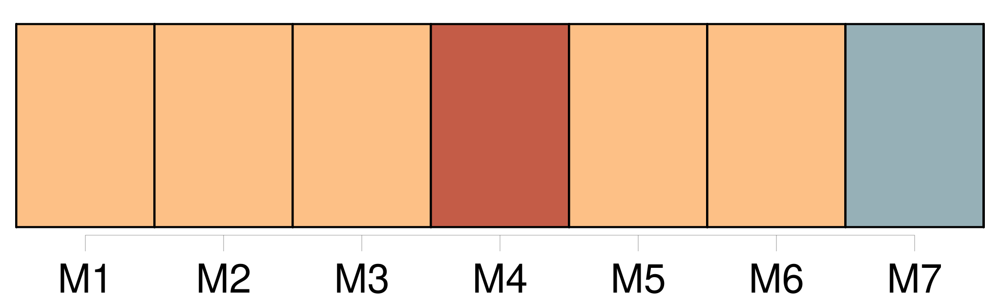

Longueur nb maillons : 12 mentions |
  |
Toute la clarté de la salle sembla entrer d'un coup dans mon cerveau pour mieux éclairer l'épouvantable scène qui avait eu lieu chez [nous] quelques heures plus tôt. [49 phrases]
Dès sa première visite Firmin tout joyeux s'était attardé auprès de mon lit, pour me dire : [16 phrases] « À présent, chez [nous] , c'est comme autrefois. [147 phrases]
J'en suis un peu jalouse pour [nos] jumeaux, que je trouve cependant d'une beauté surprenante. [10 phrases] C'est encore la lecture si intéressante des lettres de Firmin me tenant au courant de ce qui se passe chez [nous] , et des faits amusants qui arrivent journellement à l'école. [13 phrases]
Au surplus, elle espérait que les enfants se maintiendraient en bonne santé en allant jouer tout le jour au Jardin des plantes assez proche de chez [nous] [16 phrases] De ton temps, il y en avait pour [toute la famille] d'un fromage. [77 phrases] Je vivais avec eux, je savais où les prendre à toute heure, et plus rien de ce qui se passait chez [nous] ne pouvait m'être étranger maintenant. [68 phrases]
Oncle meunier ne parut pas trop surpris, et tante Rude qui le paraissait moins encore, offrit de m'aider à nettoyer et mettre en ordre [notre] propre maison qui était mitoyenne avec celle de Manine. [15 phrases]
Et pendant quelques instants, il y eut entre [nous] autant de pleurs que de rires. [40 phrases] Maintenant que [la famille] est divisée, il faut pourvoir à trois feux, trois lampes et trois demeures. [2 phrases]
Je fis signe que oui, tandis qu'en moi -même je répondais : |

|
La ressource peut être téléchargée sur la page Ortolang
Si vous avez des questions ou vous voyez des erreurs, merci d'envoyer un mail à silvia.federzoni89@gmail.com
Site développé par S. Federzoni (contact)